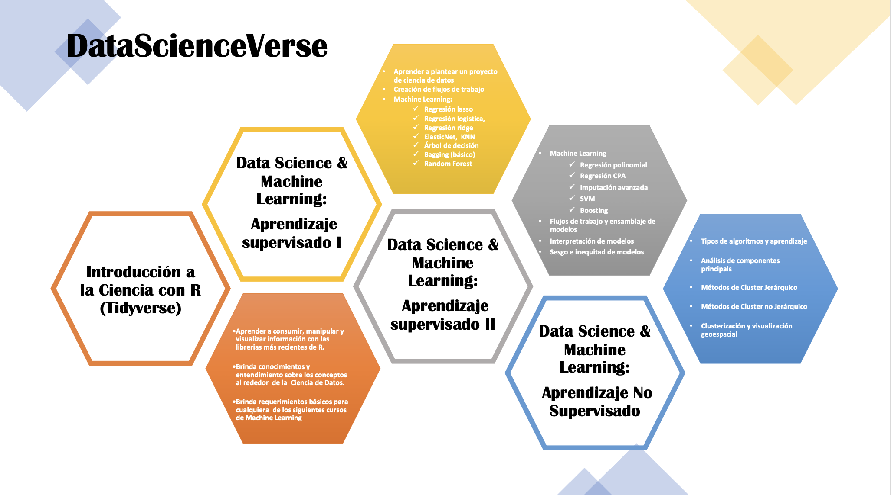

AMAT- Introducción a Ciencia de Datos y Machine Learning
Capítulo 1 BIENVENIDA
1.1 Objetivo
La primera parte del curso tiene como finalidad que el alumno tenga un entendimiento general de conceptos, técnicas, algoritmos y del proceso de desarrollo de proyectos de Ciencia de Datos. Entenderá la diferencia entre Big Data, Machine Learning, Business Intelligence y Ciencia de Datos. Todo lo anterior será cumplido mientras el alumno aprende las paqueterías y funciones más novedosas que se usan en R para Ciencia de Datos y las tecnologías que dan soporte a este software.
Se asume que el alumno tiene conocimientos generales de estadística, bases matemáticas y de programación básica en R.
1.2 ¿Quienes somos?
ACT. ARTURO BRINGAS
LinkedIn: arturo-bringas Email: act.arturo.b@ciencias.unam.mx
Actuario, egresado de la Facultad de Ciencias y Maestría en Ciencia de Datos, ITAM. Experiencia en modelos predictivos y de clasificación de machine learning aplicado a seguros, deportes y movilidad internacional. Es jefe de departamento en Investigación Aplicada y Opinión de la UNAM, donde realiza estudios estadísticos de impacto social. Es consultor para empresas y organizaciones como GNP, El Universal, UNAM, Sinnia, la Organización de las Naciones Unidas Contra la Droga y el Delito (UNODC), entre otros. Actualmente es profesor de machine learning y programación en R en AMAT y se desempeña como consultor independiente en diferentes proyectos contribuyendo a empresas en temas de machine learning, estadística, series de tiempo, visualización de datos y análisis geoespacial.
ACT. KARINA LIZETTE GAMBOA
LinkedIn: KaLizzyGam Email: lizzygamboa@ciencias.unam.mx
Actuaria, egresada de la Facultad de Ciencias, UNAM, candidata a Maestra en Ciencia de Datos por el ITAM.
Experiencia en áreas de analítica predictiva e inteligencia del negocio. Lead y Senior Data Scientist en consultoría en diferentes sectores como tecnología, asegurador, financiero y bancario. Experta en entendimiento de negocio para la correcta implementación de algoritmos de inteligencia y explotación de datos. Actualmente se desarrolla como Arquitecta de Soluciones Analíticas en Merama, startup mexicana clasificada como uno de los nuevos unicornios de Latinoamérica. Senior Data Science en CLOSTER y como profesora del diplomado de Metodología de la Investigación Social por la UNAM así como instructora de cursos de Ciencia de Datos en AMAT.
Empresas anteriores: GNP, Activer Banco y Casa de Bolsa, PlayCity Casinos, RakenDataGroup Consulting, entre otros.
1.3 Ciencia de Datos en R

1.4 Estructura del curso actual
1.4.1 Alcances del curso
Al finalizar el módulo, el participante sabrá plantear un proyecto de ciencia de datos, desde sus requerimientos hasta sus alcances. Sabrá crear flujos de trabajo limpios y ordenados para crear poderosos modelos de Machine Learning. Este curso brindará las bases para introducirse al módulo intermedio de Ciencia de datos que se imparte en AMAT:
1. Data Science & Machine Learning (Aprendizaje Supervisado II)Requisitos:
Computadora con al menos 4Gb Ram.
Instalación de R con al menos versión 4.1.0
Instalación de Rstudio con al menos versión 1.4
Kit básico para Ciencia de Datos con R (Tidyverse) ó
Dominio de las funciones de manipulación y visualización de datos con Tidyverse en R
Temario:
1.- Introducción a Ciencia de Datos (8 HRS)
- ¿Qué es Ciencia de Datos?
- Objetivo de la ciencia de datos
- ¿Qué se requiere para hacer ciencia de datos?
- Tipos de problemas que se pueden resolver
- Tipos de algoritmos y aprendizaje
- Ciclo de vida de un proyecto de Ciencia de Datos
- Taller de Scoping
2. Machine Learning: conceptos básicos (4 HRS)
- ML y algoritmos
- Análisis supervisado vs no supervisado
- Sesgo y varianza
- Pre-procesamiento e ingeniería de datos
- Partición de datos: test & train
3. Machine Learning: Modelos de aprendizaje supervisado (20 HRS)
- Regresión lineal
- Regresión logística
- Regresión lasso
- Regresión ridge
- ElasticNet
- KNN
- Árbol de decisión
- Bagging (básico)
- Random Forest
- Comparación de modelos
1.5 Duración y evaluación del curso
El programa tiene una duración de 32 hrs.
Las clases serán impartidas los días sábado, de 9:00 am a 1:00 pm
Serán asignados ejercicios que el participante deberá resolver entre una semana y otra.
Al final del curso se solicitará un proyecto final, el cual deberá ser entregado para ser acreedor a la constancia de participación.
1.6 Recursos y dinámica de clase
En esta clase estaremos usando:
- R da click aquí si aún no lo descargas
- RStudio da click aquí también
- Miro úsame
- Zoom Clases
- Pulgar arriba: Voy bien, estoy entendiendo!
- Pulgar abajo: Eso no quedó muy claro
- Mano arriba: Quiero participar/preguntar ó Ya estoy listo para iniciar
- Grupo de WhatsApp El chismecito está aquí
- Google Drive
- Notas de clase Revisame si quieres aprender